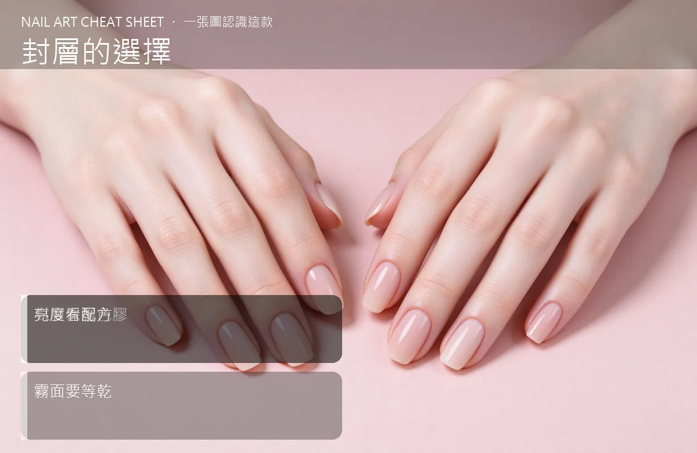

美甲封層的選擇是什麼？入門入門攻略
封層是最後那道『保護貼兼亮光漆』——選對亮面或霧面，整副指甲的質感立刻分出高下。
封層的選擇原理與辨識重點：美甲師不說的封層保護色膠
如果把凝膠美甲當成一間房子，封層就是屋頂兼外牆。色膠上完後覆一層封層，一方面把顏色鎖在下面防刮防磨，一方面決定你指甲的『光澤』：亮面會反光、像玻璃；霧面是低調的絨毛感；還有一種『可撓封層』比較軟，適合薄甲或常做家事的人。
誰適合做封層的選擇？亮面霧面選對對號入座
選色都對了卻總覺得『哪裡不對勁』的人，問題常常出在封層沒挑對；拍照上相與否也看它。
封層的選擇美甲施作步驟：亮面／霧面／可撓封層
色膠照乾 → 均勻薄上封層（記得包到前端邊緣）→ 照燈 → 若用霧面，務必等表面完全乾、沒殘膠再碰東西或放下手。
封層的選擇優缺點分析：美甲持久度與傷甲評估
| 優點 | 說明 |
|---|---|
| 亮面反光、顯白又上相；霧面低調高級；可撓封層較不容易崩裂，耐用取向。 | 是通用流派的招牌，入門就能上手 |
| 缺點 | 說明 |
| 霧面怕髒、怕刮，一條刮痕就明顯；便宜亮面久了會泛黃。 | 前置與霧面封層最忌『沒照夠就碰』——指紋或灰塵一壓，整面就廢了，只能磨掉重上。沒顧好會打折 |

封層的選擇新手雷區：亮度看配方與常見錯誤
注意：霧面封層最忌『沒照夠就碰』——指紋或灰塵一壓，整面就廢了，只能磨掉重上。
封層的選擇和其他美甲做法的差別比較
亮面＝光澤感、顯手指修長；霧面＝氣質感、適合深色或歐美風。可撓封層則是『耐用取向』，光澤略遜一籌，但撞了比較不裂。
封層的選擇美甲常見問題 FAQ
Q：霧面可以再打亮嗎？ A：一旦上了霧面就沒救，只能磨掉重上亮面。所以霧面要想清楚再上。
Q：封層要上多厚？ A：薄而均勻就好。太厚會流到指緣、也容易縮膠，前端起翹。